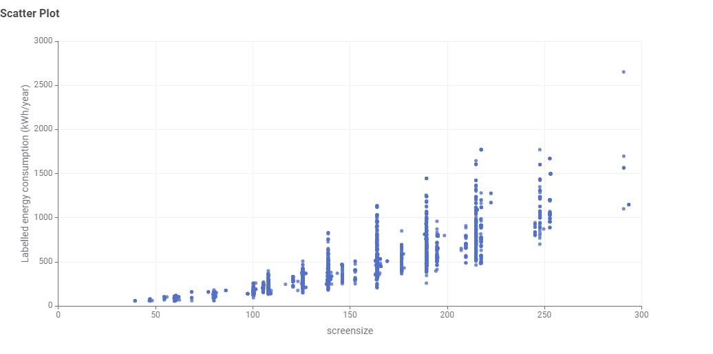

Data Story: The Real Cost of Screen Real Estate
Audience Context: Everyday consumers balancing home entertainment upgrades against ongoing residential electricity expenses.
Modern consumers gravitate toward 65-inch and 75-inch form factors. However, backlight area scales quadratically with diagonal dimensions, turning the display into one of the largest continuous power consumers in the living room.
Visualising Screen Size vs. Energy Consumption
The scatter plot below models the registered market dataset after converting diagonal measurements from centimetres to rounded inches on the horizontal axis against annual energy consumption (kWh/year) on the vertical axis.

Key Findings & Analysis
- Unit Normalisation: Converting raw centimetre values to standard diagonal inches (dividing by 2.54 and rounding) groups the models into distinct retail size brackets (43", 50", 55", 65", 75", 85").
- Non-Linear Escalation: Below 40 inches, power draw stays modest and tightly clustered under 300 kWh/year. Beyond 60 inches, baseline power requirements accelerate sharply due to increased illuminated surface area.
- Within-Class Variance: Looking at the 65-inch and 75-inch clusters, vertical columns span from roughly 250 kWh/year to over 1,200 kWh/year, demonstrating that panel backlighting and efficiency tier have as much impact on power consumption as screen dimensions.
- Consumer Takeaway: Buyers who want a larger display format can offset operational costs by selecting an efficient model at the lower boundary of that inch tier.
Interactive TV Energy Cost Calculator
Estimate running costs based on display power, daily usage, and electricity tariffs in Malaysian Ringgit (RM).